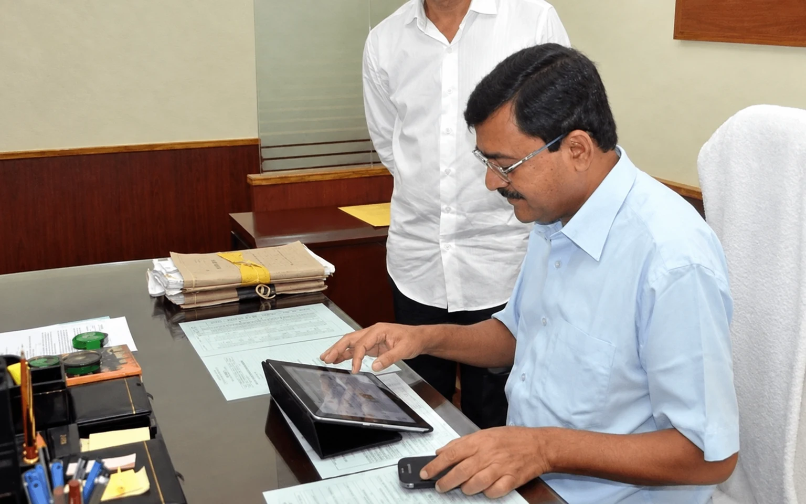

JK : The Jewel
Read in book
A public servant is expected to be fair, honest, and efficient. Jugal Kishore Mohapatra was truly a befitting person who had all these qualities as an administrator. He was die-hard honest, very proactive and positive-minded, dedicated, decisive, and committed to the public interest. Being a proud product of the Delhi School of Economics, he was quite thorough and updated in his subject, no less than an erudite professor.
He was not so visible in social circles except the company of his few selected friends and books were his all-time companions. The last time I met him in his residence a few months back he was preparing his Ph.D. dissertation. I had the rare opportunity to work with him during his tenure as Finance Secretary for almost three years.
During the initial days of my association with him, a misunderstanding crept in due to some baseless allegations against me by a group of dishonest officers who were aggrieved on me and used to send petitions against me. When a new Secretary joins they are in the habit of maligning me and taking revenge. This created some sort of trust deficit in him and he tried to avoid me. That’s what I felt.
It was quite unbearable for me and one night I wrote a lengthy email to him clarifying everything and requesting him to transfer me outside the department but before sending it to him I pressed the wrong key and it got deleted. Thankfully, within a few days he perhaps realized his mistake and took me into confidence. To the extent in important matters where he was in a dilemma he chose to consult me and sometimes marked the files for my views even though I was not dealing in that matter. I was assured to see that my views were given due weightage.
Unlike his predecessors he was a reformist and wanted to see changes for the better on all fronts. Manuals and circulars were updated keeping in view the changing needs and best practices followed elsewhere. Budget preparation was made more systematic and progressive. Cash management system was introduced to discourage expenditures during the last leg of the financial year. Computerisation of Commercial Taxes and Treasury System was given a push and there was remarkable progress.
Once during a discussion I mentioned redundancy of the central supply of office stationaries and reform on this account. He readily appreciated the idea and asked me to submit a proposal. Few days thereafter he again reminded me about it. I readily submitted a proposal and he got it approved by the CM. On another occasion he observed that officers were taking huge sums as honorarium without any cap. He called me and asked me to examine the issue and ascertain the practices in Central Government. Finally, I submitted a proposal and the honorarium was capped at rupees twenty thousand per annum.
One has to learn honesty in public life from him. He never used the office vehicle for personal use and whenever any social function was there he used to drive his car and attend it. On some occasions he had to use the office car for his personal use and he promptly paid for it. He was a strict disciplinarian and senior officers including Secretary level officers were afraid of meeting him in person.
But he always allowed me to speak out before him to the discomfort of some of my colleagues and he never misunderstood me. At a point of time he made me work for about ten to twelve hours saddling me with multiple responsibilities . I had then accepted the challenges, enjoyed my work and fulfilled his expectations to the best of my satisfaction.
On one occasion when I entered his chamber I found the Advocate General (AG) sitting with him on the sofa. The AG knew me and my proximity to the Minister very well and made some uncalled for remarks. I was quite embarrassed and hurriedly left apprehensive of displeasure of the Secretary. But thankfully nothing happened like that. He didn’t misunderstand me based on those remarks. After his joining, most of the files were being promptly disposed of at his level and only files involving policy matters or matters requiring Government approval were sent upward.
The Minister was somehow unhappy to find few files endorsed to him and once expressed it publicly. Of course nobody could raise any question about his integrity and efficiency. On the day of his joining he announced that he would never use red light usually put during confidential discussions and he followed it meticulously. He was always open for the department officers for discussion on any matter anytime provided he was free. Moreover, he used to listen to the points of the subordinate officers, discuss threadbare and take a pragmatic decision in the matter.
He was a person who somehow conceded to inefficiency at certain levels but never tolerated corruption. He took strong actions against persons found indulged in corrupt practices. He was not only a role model for the young officers in the department but also a great mentor for them. He always stressed on training and capacity building of the officers.
MoUs were signed with ASCI, Hyderabad and XIMB for midterm training of the officers, which was widely appreciated. XIMB was also roped in to provide policy support to the department and a dedicated Centre was established for the purpose. When it was observed that capital expenditure was not upto the expected level he chose the road sector for the purpose and there was a marked improvement in this regard. Similarly, development of railways through PPP mode was muted and it could be a successful model.
I had fond memories with him in the Finance Department and missed it when he shouldered higher responsibilities as Development Commissioner and subsequently as Chief Secretary. But my love and respect for him as a person and as an administrator shall remain forever.
Leave a thought
No account needed. Your name and comment appear publicly after approval.